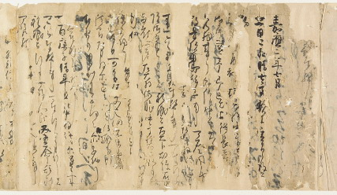

公家・武家・寺社に伝った史料は、前近代の日本史を研究する上で不可欠の素材です。古文書分野は武家・寺社の文書、古記録分野はおもに公家の日記について、調査研究と史料集編纂出版をします。
原本や質の良い写本を詳しく調べ、くずし字を解読し精確なテキストを確定するだけでなく、散逸した文書・日記を本来の姿に復元することで、史料の「再発見」につなげます。日記の裏に残された文書の解読や、多数の史料のまとまりの中にひとつひとつの史料を位置づけ直すことで、さまざまな情報を引き出すよう努めています。奥行きのある史料学の進展に寄与することが本部門の課題です。
その成果は、書籍だけでなく、フルテキストデータベース、古文書ユニオンカタログデータベースを通じて、広く発信しています。
刊行物 （2005 ～ 2019 年度）
- 『大日本古文書 家わけ第10 東寺文書』 14・15・16・17
-
『大日本古文書 家わけ第17 大徳寺文書』 別集真珠庵文書7・8 徳禅寺文書1
- 『大日本古文書 家わけ第18 東大寺文書』 20・21・22・23・24
- 『大日本古文書 家わけ第19 醍醐寺文書』 14・15・16
-
『大日本古文書 家わけ第22 益田家文書』 3・4 ［デジタル版面（大日本古文書のみ）］
- 『大日本古記録 中右記』 5・6・7・別巻
- 『大日本古記録 愚昧記』 上・中・下（完）
- 『大日本古記録 民経記』 10（完）
- 『大日本古記録 実躬卿記』 5・6・7・8・9
- 『大日本古記録 後深心院関白記』 2・3・4・5・6(完)
- 『大日本古記録 薩戒記』 3・4・5・6
- 『大日本古記録 後法成寺関白記』 3・4（完）
- 『大日本古記録 中院一品記』 上

愚昧記嘉応２年